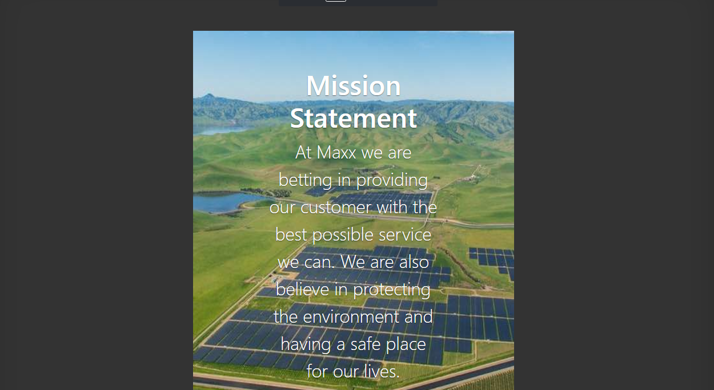
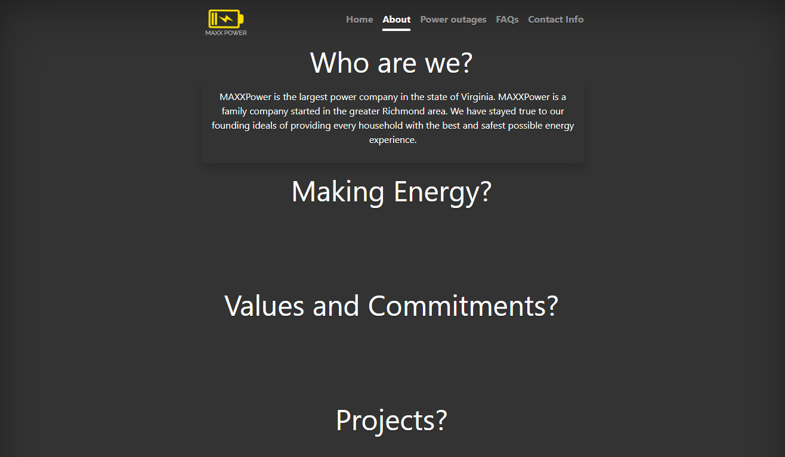

Here's a closer look at the projects I worked on over the past few weeks:
WEB DEVELOPMENT
The first module I worked on was Web Development. My assigned role during this module was the UI/UX Designer. As the UI/UX Designer, I was responsible for making sure that the website looked as aesthetically pleasing as possible. I was also in charge of creating a logo for the simulated company.

As UI/UX Designer, we went for a simplistic, modern design for the website.

To add to the minimalist design for the website, we incorporated a drop down menu for the FAQ page
SECURITY
The next module I worked on was Security. My role in this module was the Information Security Analyst, where my main responsibility was to implement security measures incase of possible disaster. I worked to implement Cloudflare DDOS protection as well as the Dashlane Password Manager to make sure the MAXX Power website was as secure as possible.
DATA ANALYSIS
The final module I worked on was the Data Analysis module. In this module, I was assigned Data Quality Specialist. I was able to research different data tools for the website and apply the most convienient one to find out more about the user audience.
Web Development
Security
Data Analysis